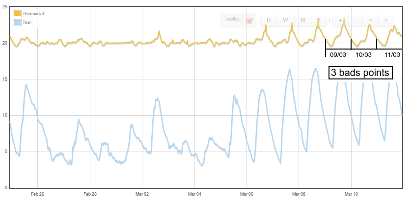
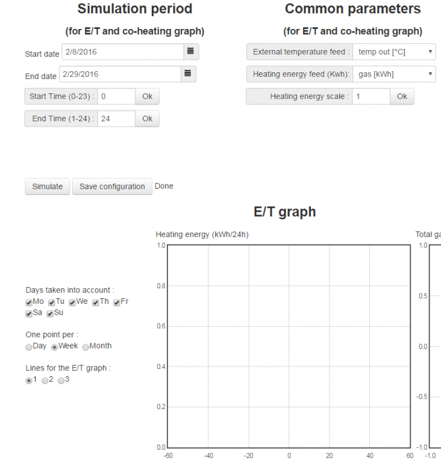

**************************************************************
UPDATE on the 9th Feb 2016
This module is now availbale on EmonCMS.org.
Once logged, you can access it via the following url : http://emoncms.org/statico
**************************************************************
Hi,
Attached is an EmonCMS module that I'm developing to perform simplified coheating tests. See more details about coheating here. My approach is to define a simplified method to determine the Heat Loss Coefficient (HLC) in occupied buildings using EmonCMS and few sensors (1TH and 1TX in my case).
This approach is based on two major simplifications :
- the determination of the HLC is done using night time data only. So, solar gains do not interfere in the HLC determination and there is no need for a pyranometer as it is the case for some methods.
- instead of using portable electric resistance fan heaters, the temperature of the house is maintained using the existing heating system of the building. This means that you need to estimate the overall efficiency of this system (discussed bellow).
This method is based on the assumption that the tested building is in a steady state during night time : gains and losses are equilibrated, the internal temperature is constant, and the energy in the thermal mass is constant. If all these conditions are present , then one can determine the HLC using the following equation :
Electric internal gains + body gains + heating gains = Heat losses
where
- Heat losses are HLC x (Tint-Text) by definition
- Electric internal gains correspond to the heat generated by all electrical appliances (except the heating system if electric). This is more or less the total consumption of electricity during the night. The proportion of electrical energy converted in heat can be customized in this module but it's roughly 90%.
- Body gains correspond to the heat generated by people sleeping in the house. This can be estimated to 55W per sleeping adult .
- Heating gains correspond to the heat generated into the building by the heating system. It's not the consumption of heating energy as there are losses in the heating system : losses in the heat generation, losses in the heat distribution, and losses in the heat emission. Basically, one can estimate the heat gains like this :
- Heat gains = heating energy consumed x overall_efficiency_of_the_heating_system
- where overall_efficiency_of_the_heating_system = efficiency_of_the generation x efficiency_of_the distribution x efficiency_of_the emission
- As an example, I have a gas condensing boiler at home (103%), with a lot of losses in my distribution system (15% of losses) and classic radiators (5% of losses). My overall heating efficiency is 1.03*0.85*0.95= 83 %
The HLC is then calculated in this method using a simple linear regression. A XY graph is plotted with one point for each night. On the X axis, it is the average of (Tint-Text). On the Y axis, it is the sum of all gains.
I experienced this module on my own flat, using the data collected from the 26/02/2014 to the 11/3/2014. Using data collected during this period, the HLC determined with this method is 87.9 W/K. It seems to be a good result as the HLC I determined using a calculating tool is 84 W/K ! (I used PHPP, a very reliable software that I know very well).

If you don't like some points, just click on them and the linear regression will be done again without these points that would become grey. It's not cheating, it means that the building is not in a steady state for these points. As an example, I have 3 bad points that correspond to the last days of my test period. As you can see on the attached graph, the internal temperature doesn't meet the requirement of the test on those last days : too high during the afternoon, not in a steady state at night (up to 20°C after midnight).

Off course, the relevance of this method has to be verified with many others buildings (with more or less insulation/infiltration/thermal mass/solair gains ...) but I'm quite confident that it may allow to perform simplified co-heating tests in existing buildings. Maybe not in too windy places as it doesn't take into account the effect of the wind.
To be successful :
- the test must be performed when the building can easily reach a steady state during the night. It means that the test must be performed during a cold period but not too sunny. This last aspect is mainly true if the building is well isolated, has a lot solar gains and a lot of thermal mass.
- the building must be maintained at a constant temperature during the test (during the night and the day) in order to stay as much as possible in a steady state.
- the duration of the night must be as long as possible ;) A night must start as soon as the building is in a steady state (midnight in my case). It must end before getting solar gains. In my case, I ended the night at 6AM because my boiler is also use for the DHW.
These parameters really depend on the building itself, its location, its usage, ... It has to be determined by try and error. Just keep in mind that you must get a line crossing the point (0,0) ... R² should be as close as possible to 100% (and epsilon closed to 0 W).
Please install and try this module that I called statico (static coheating).
Do not try on a long period (more than one month) because it would lag.
Let know if you get a line and if you can compare the result to a calculated HLC.
Regards,
Eric AMANN
Re: Static coheating module
Hello Eric, this looks really nice and very useful! thanks a lot for sharing! I've linked this in on the building thermal performance monitoring and modelling page http://openenergymonitor.org/emon/openbem
Brilliant!
Trystan
Re: Static coheating module
Hi Trystan,
Thank's ! Do not hesitate to try it and let me know how it works.
January is probably the best moment to do co-heating tests (few solar radiation and low temp)
Eric
Re: Static coheating module
Hi
I got the same result in feb-march 2015 (below) than in march 2014 (my original post).
Again, to be experimented on another building and in winter time.
Eric
Re: Static coheating module
This is a really nice feature!
I really think this should be worked on a little more and then integrated into the emoncms, this is one of the most useful tools for analysis when working with buildings.
Its not only used for evaluation of the heatlosses, and it's not necessary to be 100% accurate on the efficiency of the heating system. If the system uses a certain ammount of energy at a certain outdoor temperature that can be enough. What is important is to evaluate the difference when making alterations in the building. And for this the tool is very helpful!
This tool is used for evaluation when adjusting/calibrating systems and also for planning and follow-up after modifications have been done.
In Norway this diagram is a must in order to get government funding when installing energy monitor systems in buildings. And energy monitors systems is a must in order to get government funding for any projects that are energy related. So this is really a key feature on this market, but in reality it would be for any user in order to evaluate building performance.
I am thinking about how to add more to this plugin, in terms of useability. And that could be to use integral for temperatur difference from measured room temperature to outdoor temperature, and compare that to variations in the integral for energy consumption. Adding solar/wind factors could be interesting also, this can be done with local weatherstation data.
Type of energy source is very important in this test. Heatpumps dont give the same kind of energy profile as a electrical heater. Accumulator tanks will seriosly make this more difficult, and maybe all 24h of the day will be needed. And thermal mass is also a factor.
I have been thinking about how to coordinate this test with information from a weatherstation that will measure solarenergy, windspeed and such. This can be very useful!
Are you still working on this? I am interested in knowing more about this, and how to add this feature into the emoncms.
Thanks for sharing!
//J
Just a question:
Is this plugin using a predetermined indoor temperature, or is it all the time comparing the indoor temperature vs. outdoor temperature? Because the interesting part would be the integral between these two.
Re: Static coheating module
Hello,
Thank you for your message ! Very happy to discuss with people interested in building thermal performance monitoring and modeling which is my first job.
My plan was to use it for my professional activity. Unfortunately, I had no time and no project to test it on several buildings except my flat ... So I'm interested in improving/testing that tool. I can help people to install and configure it for the coming winter. It needs very few sensors (internal temp, external temp, main electricity and heating energy). Can be done with one EmonTX and one EmonTH. My first job is to make it run on EmonCMS V8.5 and greater.
Regarding your question, the x-axis is average_internal_temperature_during_night_time - average_external_temperature_during_night_time. As everything is linear, it corresponds to the integral between these two. .
Eric
Re: Static coheating module
Hello Eric!
Thanks for clarifying what is measured and how it is calculated!
I see two really good potential uses for this graph you have made:
One is more advanced then todays design:
I think that by using a weather station that measures solar radiation and wind speed this calculations could be made even more advanced as multiple factors of data is collected. By using this info all together there is more information to be calculated from data collected to the emoncms. This would be interesting for specialists and people working in construction and consulting.
One is less advanced:
And at the same time this graph can be made even more simple and still be very useful for ordinary users that just wants simple energy monitoring.
By simply integrating the indoor temp vs. outdoor temp continuously all year day by day to create a degree day (degree hour) number for each day. And comparing this to the energy usage / day (or by hour), there will be a less advanced but still very useful graph. This can be done 24/7.
If also the heated area is brought in to the diagram, so that it shows kWh/m2 @ °C it can be used to compare buildings that has different sizes, construction materials and technical installations. This would be kind of real time energy rating for buildings.
In systems with direct heating like direct electrical heating its possible to use hour/hour with very good result.
More ideas how to use this diagram in various types of buildings:
I can see that you probably had small houses in mind during this design of this diagram. But the concept of the energy vs. temperature diagram is very usable also in large commercial buildings where there is a lot of energy to be saved.
This diagram shows a building that has cooling installed, and that will create another kind of bend on the graph.
For people working with building management this graph is very useful, as it will show you if there is something wrong in the systems. For example a heat exchanger that is malfunctioning will generate a lot of dots above the standard lines. Or if the set point for heating and cooling is wrong, the two systems will work against each other and generate high energy consumption. So many typical situations will be found fast and easy.
This will be shown directly in this graph if used for energy monitoring 24/7.
Not only for analysis and development, but also for maintaining good energy performance over time:
In long term usage of buildings this is one of the best ways to tell the state (diagnostics) of technical installations like cooling machines, ventilation and heating. When this graph starts sliding, it means that installations are in need of maintenance. If the right side of the graph is sliding up, its the cooling that has problems. If the left side is sliding up it means heating has a problem..
This tool can really be developed into something that is very useful for all users of the emoncms. Small houses just like commercial buildings. For home users that does not have COP/HSFP meters on their heat pump, this will quickly catch a failed heat pump from this diagram. Same goes for failed heat exchangers in ventilation or failed thermostats for under floor heating and stuff like that.
I have been looking for this for some time, and i am very thrilled that you took your time to look at this.
I am interested in taking part in development of this idea, and i can probably find a client that will give me acess to large buildings that have both heating and cooling, where this can be developed.
Also i have acess to a villa the size about 160m2, which is heated with direct electric heating (underfloor and panels) that can be used as reference too.
I will have a small budget for this as my company agreed to fund som small development, so that equipment can be bought and configured for our purpose.
I ordered the EmonTH, i have Raspberry and EmonTXv3, and i also ordered a weather station that can connect to wunderground weather service.
Sorry for the long post, i am just a bit excited ;)
//J
Re: Static coheating module
Hello,
I think that by using a weather station that measures solar radiation and wind speed this calculations could be made even more advanced as multiple factors of data is collected.
I totally agree for the wind speed. It must be integrated in my tool as it is calculating the thermal performance during night time. But it will require another sensor that few people have. It is not necessary for regions with low wind.
Regarding the solar radiation, this can be integrated in a more sophisticated tool like this one. Although one can measure the solar radiation easily (I modified an EmonTh to make a cheap DIY pyranometer, I will write a post later on that), I think it is a hard job to integrate the solar gains in the calculation. For every glazing, one needs to know its surface, the solar irradiation in the slope/azimuth of the glazing, the shading, the solar protection, etc.)
And at the same time this graph can be made even more simple and still be very useful for ordinary users that just wants simple energy monitoring.
Again, I agree. That tool should be more simple and accessible for everyone.
If also the heated area is brought into the diagram, so that it shows kWh/m2 @ °C it can be used to compare buildings that have different sizes, construction materials and technical installations. This would be a kind of real time energy rating for buildings.
A ratio in kWh/m².°C. is probably easy to understand. I can add it very easily. It's H x night_duration / floor_surface. For comparison, note that it would be dependent from the climate ... (solar radiation and wind in particular). This ratio is also dependent of the duration of the night. That factor depends on the building itself (insolation, thermal mass, internal temperature setup, ...)
I can see that you probably had small houses in mind during this design of this diagram. But the concept of the energy vs. temperature diagram is very usable also in large commercial buildings where there is a lot of energy to be saved.
Well, my first thinking was "let's do it simple and cheap". That is why I worked first on residential buildings (not necessarily a small one) only during the night . In that kind of buildings, the internal temperature is quite constant during the night and this makes the co-heating test more reliable/simple
For people working with building management, this graph is very useful, as it will show you if there is something wrong with the systems.
This was also my idea for the next version. This tool should be used for commissioning, detecting wrong usage, detecting a system failure, etc. Before adding this kind of automation, I think I would be preferable first to test a basic version on several buildings with different level of insulation, different thermal mass, different climate, different occupation, etc.
This tool can really be developed into something that is very useful for all users of emoncms.
I agree and will be happy to bring something to the community but it requires that people get involved in it. It means testing the basic tool, or giving access to their data to let somebody else doing it.
Eric
Re: Static coheating module
That's a nice Post Eric!
Seems i have your other piece of the puzzle here because i am working mainly with existing buildings, and not designing new buildings. I am pretty sure i can help you to find some kinds of buildings in Scandinavian climate that can be used for this experiment. This means cold winters, long nights.
My idea about the weather stations is not necessarily to use all the data provided in the diagram calculations, it can also be used to exclude data from calculations. It is simple to make a line of code in the script that will help to ignore data points if there is heavy wind or solar radiation present. So the local weather station will be used for three things.
In Scandinavia there are only a few hours of sunlight in the north (wintertime), and there is a pretty big variation of daylight hours from November - March. So automatic exclusion can work nicely.
Instead of telling the script what hours to analyze, it can be made automatic by using the solar radiation data from the weather station.
This way the calculations will automatically be filtered from two disturbing factors, wind and solar radiation.
However, if there is snow on the weather station, it will not measure solar radiation correctly.
Another thing that can be done with weather data present is simply drawing the trend line from data where there is no wind and no solar effect on the building. And then another line can be made when there is heavy wind and no solar, and a third line when there is heave solar radiation and no wind.
It can look like this. When there is much wind the energy consumption will be higher (red line) and when there is much solar radiation energy will be lower (green line). Also the dots that are excluded from main line calculations can have colors accordingly.
Well thought trough visualization can make this diagram very useful, what do you think?
Do you have access to your own emoncms server? If not maybe we can setup one where we both can have access to and store data. I don't know, maybe its possible to setup the EmonPie so that it sends data to multiple emoncms servers?
Im still very happy to have found this thread.
//J
Re: Static coheating module
Hi,
This way the calculations will automatically be filtered from two disturbing factors, wind and solar radiation.
Ok, I understand your point. That's a good idea. This is feasible. As a complement, the wind measurement would allow to estimate the quality of the airtightness of the building (something like poor/medium/good/excellent)
Another thing that can be done with weather data present is simply drawing the trend line from data where there is no wind and no solar effect on the building. And then another line can be made when there is heavy wind and no solar, and a third line when there is heave solar radiation and no wind.
It may work with some buildings in some places. I'm not sure this can be generalized.
Do you have access to your own emoncms server?
Yes. I'm using a shared host linux server but it's almost full.
If not maybe we can setup one where we both can have access to and store data. I don't know, maybe its possible to setup the EmonPie so that it sends data to multiple emoncms servers?
Yes.
Eric
Re: Static coheating module
Eric
I have now attained the hardware that is needed to make some small initial tests. Its a weather station that has direct connection to the internet, and uploads data to any server. It uses the same POST string as the wunderground service, so it will not go into emoncms without some hassle. I have one emonTX V3 with that.
Also i got one EmonTH that can be used together with two dallas sensors and one pulse counter. This will be enough for another building.
I like the idea about evaluating air tightness in a simple way. Usually i do this with the Retrotec blower door and a thermal camera.
I found out that the weather station can measure and log pressure, inside and outside the building. It also measures temperature inside and outside.
Do you think that inside pressure, and outside pressure can be analyzed together with wind speed to draw some simple conclusions regarding air tightness?
//J
Re: Static coheating module
Hi,
Do you think that inside pressure, and outside pressure can be analyzed together with wind speed to draw some simple conclusions regarding air tightness?
For the pressure, I don't know. I guess it means being able to measure it with a good precision (few Pascal). I have no idea if it possible with a low cost sensor.
My idea was to calculate the Heat Loss Coefficient (HLC in W/K) during nights with no wind and with heavy wind. Combined with other parameters (direction of the wind, exposure to wind of the building, height of the building, ... ) those coefficients may give an rough idea of the air tightness. It may help to estimate the n50 coefficient but I'm not sure. To be investigated.
Working on existing buildings, my goal is just to determine whether n50 is closest to 2 or to 10.
Eric
Re: Static coheating module
Eric, is there any progress on this tool?
Do you need any input, help or beta testing?
I now have pretty much everything we need to start logging some buildings in scandinavian climate if that is interesting for you.
I can set up in different kind of building and can try to find the kind of building that is needed. I have one small office building that is used for telemarketing, and that has heat pump (air source) and electrical radiators. It is not used as a residence and outside of office hours, it's mostly empty. It's situated with no wind and very little sunshine.
If you are still trying to develop this I am very much interested to help out with the practical stuff.
Best regards
//J
Re: Static coheating module
Hi,
This module doesn't work anymore on my EmonCMS server since I have updated it from v7 to v8.5. So, I'm modifying the initial code to make it work on EmonCMS v8.x and greater. I will publish this new version soon. On your side, can you install it on your own EmonCMS server ?
For the moment, I didn't plan any others improvement/features. But, in the coming weeks, I will add a second graph as you suggested with external temp (X-axis) and heating energy (Y-axis).
Bye,
Eric
Re: Static coheating module
Hi Eric!
How nice that you are still on the project of making the E/T diagram real for the emoncms users!
I am very exited about the graph with energy vs temperature that would look like this:
It is actually really simple, and does not need so much. Only outdoor temperature (average/day) and kWh/day feeds in the same diagram. And a simple statistic function for the line to show.
I dont have my own server as of today, but my friend have one. And i can ask him to install this when you have it running and i will try it and give you feedback! I can also give you access to the results ofcourse.
I just ordered another EmonPi for this, together with a EmonTH. I will set it up in a cuple of weeks when i have my hands on all the hardware.
Do you need anything regarding test building? Just tell me and i will see what i can do.
Best regards
//J
Re: Static coheating module
Hi,
How nice that you are still on the project of making the E/T diagram real for emoncms users!
The coheating test is very interesting but not understandable for everyone. Moreover it doesn't monitor the heating device efficiency. That is why a simple tool as the E/T graph is a very good idea !
I don't have my own server as of today, but my friend has one. And I can ask him to install this when you have it running
I have already updated the code and it's now running on EmonCMS 8.5 and greater. Let me add the E/T graph before sending it. This version may be installed on EmonCMS.org for some beta-testing, (Discussed with Trystan) but it is recommended to install it on your own server.
Do you need anything regarding test building? Just tell me and i will see what i can do.
I will appreciate to get as much results as possible on different types of buildings (with more or less insulation/infiltration/thermal mass/solar gains ...).
Eric
Re: Static coheating module
Hi,
Some screenshots of the last version with E/T and coheating graph.
Goodfidelity, I put one point per day for the E/T graph. Is it what you are expecting ?
Comment welcome !
Eric
Re: Static coheating module
Eric, this looks really good!
It's just what it should look like. How can we get this running on my new EmonPi?
I really want to get this up and running, is there any chance that we can get this into the emoncms.org server for tryouts so that we can both use the same account? I dont have a server as for now.
Abouth the math and calculations i think that it could be a nice feature to choose the time from day, days, week. Because some buildings have heatpumps with accumulator tank, and they will give very strange value if the pump fills the tank one day and the heat is used another day. Otherwise this is very good!
I think this will be very useful.
Best regards
Re: Static coheating module
Hi Eric,
I would like to try out your static co-heating module. It looks like its just what I am looking for. The attach file to the first post is that the most up to date version? And could you give me some hint regarding how to install it on my EmonBase?
Currently I have just guessed a heating function dependent on external temperature. I use the function to calculate an expected kWh and compare it with measured use. Not as advanced as yours.
Lars
Re: Static coheating module
Hi,
Attached is the last version of that module. Many improvements come with it :
Here is how I installed this module on my own EmonCMS server (V8.5.1 on shared LAMP):
1. unzip the attached archive into the directory xxx/emoncms/Modules
2. Log in your emoncms server as admin.
3. Go in the admin section (top right corner)
4. Click on the "Update and check" button.
I don't know if this procedure works on Emonpi.
Regards,
Eric
Re: Static coheating module
Thanks. Installed it ad your description and the "Update and check" created something in the database. But how is it accessed?
Lars
Re: Static coheating module
Really good job Eric!
I want to install this on my emon Pi aswell! Is there anyone who knows how to do this?
I am runningc MacOSX. Is there any easy way to get the files from my Mac to the emonPi?
I found this, and its a very nice dash for building management. Keeps the E/T diagram together with accumulated energy usage and cost. It also has a small notation function that allows users to make notes if anything unusual made the graph go up or down that special day.
Again, really good job!
Re: Static coheating module
Hi,
Again, I don't know whether it can work on EmonPi ... (the emoncms branch installed on EmonPi is different).
For a trial, just install the module as explained above in my last post. Then, a new menu ("Extras" or something like that) should appear on the top navigation bar. Select the sub menu ("E/T Graph and Static Coheating Graph)
Otherwise, once logged in, you can access directly to the module with the URL:
http://<EmonPi_IP>/statico/view or http://<EmonPi_IP>/emoncms/statico/view
Let me know,
Eric
Edit : good fidelity, to transfer the files to emonPi, I guess you can use FTP. Otherwise you may directly put the Sd card on your PC/MAC.
Re: Static coheating module
Hi all,
Trystan installed the last version of that module on Emoncms.org. Thank you Trystan !
Once logged, you can access it via the following url : http://emoncms.org/statico
Obviously, it means that your data must be present on EmonCMS.org.
Eric
Re: Static coheating module
Hi Erik,
Just to show you that you program is being used. There was an period where nobody was home (skiholiday) and you can see what statico produce from that period.
I think that R2=99.2 is pretty good.
I have central heating so I think that all energy is eventually being use to heat the house.
Lars
Re: Static coheating module
This is fantastic.
I am now trying to design som nice setup around this plugin.
Would it be possible to produce iframe for the diagrams so that they can be easily integrated in HTML? Similar to the other graph functions of the emoncms? That would make this so good.
Did you have any use for the documents i sent you with al the math and theory behind the E/T?
best regards,
GF
Re: Static coheating module
Hi,
So happy to see people using this module.
LArs, thanks for sharing ! You said that all energy is eventually being use to heat the house. I dont think it's true. Your heating systeme can't be 100% efficient. Tell us more about it. How the heat is produced ? Are you using radiators or a heating floor ? How the heat is conveyed to the radiators/heating floor ...
goodfidelity, I didn't receive any document form you. Please send them again. For the moment, it is not possible to produce iframe for the diagrams. It's a module and not a visualization. But one day ...
Bye
Eric
Re: Static coheating module
The heat is district heating.
Hot water is coming into the house and is returned colder. The energy going into the house is measured as the difference in the temperature, times the volume of the water times the heat capacity of the water. There is a heat exchanger between the primary circle (water between house and heating plant, but the lost heat is lost within the house. The secondary circle of water is pumped to the radiators. There is a loss in the distribution to the radiators. But again its with in the house. And yes there is both radiators and heating floor.
The only loss I can see, is that the district heat is being use to produce hot water. So hot water going out into the sewer is a loss.
I am not a expert in this field so please tell me if I am wrong.
Lars
Re: Static coheating module
Lars,
OK, in your case, the overall heating efficiency must be close to 90-95%, but not 100%. (Assuming you are measuring the energy going into the house after the heat exchanger).
One always has some losses because the heat is not delivered exactly where and when it is really required for many reasons (thermal stratification, responsiveness of the heating system, etc.)
Eric
Re: Static coheating module
Excellent module, thanks a lot. I have to look at it.
I have 15 years of data, recording (manually!) gas, electricity and water every week for my personal use. Temperature is available online for my region and recorded every week as an average. The department of energy gives us what we call here the "degré-jours".This parameter is calculated by week and by month.
I would like to test this module using one year of data. I have a system running on emoncms.org. However, I would like to upload "some new content" in different feeds.
Question: what's the best process to upload data? Thanks for your help and again thanks for the great module.
Walter
Re: Static coheating module
Is it possible to upload 10 years old data on emoncms.org? Something like this in step of 1 week?
Thanks
Re: Static coheating module
A feature for uploading historical data would be extremly useful, to create a good E/T before logging. Otherwise one whole year might be needed to establish good history.
Let us know if you find out how to do it!
//GF
Re: Static coheating module
Hi guys!
I get this funny looking graph if i extend the hours to be logged. Is anyone else getting this or am i doing something wrong?
Thanks!
//GF
Re: Static coheating module
Hi,
Daturach, this is possible to upload historical data. Look for "csv import" in the forum.
Goodfidelity, I can't figure out what's happening.
- Could you please post a screenshot of the full page to let me see the parameters above the graph ?
- Can you get normal graphs when not extending the start and stop time ? Again can you post a screenshot ?
Eric
Re: Static coheating module
Eric, for you i don't have one picture. I have two!
I just changed the time from 06h to 24h. I also tried various other numbers, but got the same result if the time period was too long.
One picture of each situation, my screen is very small so i cant really see all the parameters at once. But I guess this pretty much gives you what you need:
Re: Static coheating module
Hi,
I can't reproduce that bug with my data, so it may come from your data. One can see only 37 points on both pictures, although your test lasts 55 days .
Here is what I suspect. The linear regression seems false in the second case because one point is hidden, because the y-value is negative. This day is ignored is the first case because no data have been found.
Could you please post a graph of your heating energy feed on the test period (from 2016-01-22 to 2016-03-16)?
I guess it had been reset during the test and this generated a negative value.
Regarding the other missing points, I also suspect missing records in your data.
If you agree, you can send me your login/passw by PM and I will have a look
Eric
Re: Static coheating module
Eric, seems you are correct. I found out that for some reason the pulse counter resets itself. I think this is due to my energy meter giving 10000 pulses / kWh.
Is there any way to get around this issue, or is this a problem with EmonCMS?
Best regards
GF
Re: Static coheating module
Hi,
10 000 pulses per kWh? Are you sure? Most of meter send 1000 pulses/kWh, i.e. 1 pulse per Wh.
On your side, you must use the Wh accumulator process to get around this issue. This will give you an ever increasing number which won't return to zero if the raw pulse count returns to zero.
Anyway, I will modify my code to ignore days with negative value.
Eric
Re: Static coheating module
I am pretty sure about the imp/hour.
We have a huge difference, from 1-10000 impulses on the energy meters. If its inside a house sometimes its 10000, and because we use electrical heating this really makes for high frequency on the LED. It looks almost like glowing constant ;)
Some of the larger buildings use 1 pulse/kWh but that's not very common here. Probably 1000 pulses is normal like you say.
About emoncms, that means i have to make another feed for the pulse counting thread?
I will try this. Do you know if all the historical data will be transferred to the new feed, or do i have to start from 0 again?
Thanks again for a nice module anyhow, happy to contribute.
//GF
Re: Static coheating module
Hi.
I have never tried but I think that one can replace a "log to feed" process by a "Wh Accumulator" process on an existing feed. This should work only with a feed which is accumulating Wh. Do not try it with a kWh feed.
Second, you have to know that Wh increases that corresponds to a power above 25kW will be ignored by this process.
Eric
Re: Static coheating module
I have uploaded a few points on emoncms.org but I don't get any graphs. There are 2 values per week, starting on 08 Feb. 2016 to 29 Feb. 2016
Unixtime gas[kWh] Temp [°C]
1454914800, 202.0, 5.7
1455519600, 233.0, 4.4
1456124400, 244.0, 4.4
1456729200, 244.0, 4.2
Question: Do we need the incremental or the differential data for the "Heating energy feed" ? I have uploaded the differential ones.
I have uploaded a screenshot regarding my settings. Let me know if I need to change anything.
Thanks again

Re: Static coheating module
Hi,
You must upload the incremental kWh feed.
Eric
Re: Static coheating module
Ok, parfait. Just uploaded my incremental kWh values but still no graphs.
Walter
Re: Static coheating module
Hi,
I dived into my code to understand why you don't get any point.
This module expects at least two values per day (for all feeds). One value at "start time" (+/- 1 minute) and one value at "end time" (+/- 1 minute) . For each day, it calculates the X/Y values. Then you can get a graph with day/week/month view.
Sorry for not having tell you that before
Eric
Re: Static coheating module
Hello Eric
Thanks for your quick answer.
Then, I can't really use your module with my old (very old) data. I recorded my consumption and the outside temperature (average temp) once a week which is, in my point of view, enough to be able to make a usable "linear regression" with Excel.
For the near future, I am going to put 2 sensors to "read" my gas meter (mostly done) and the outside temp and upload everything to emoncms.
Thanks again for your great module.
Walter